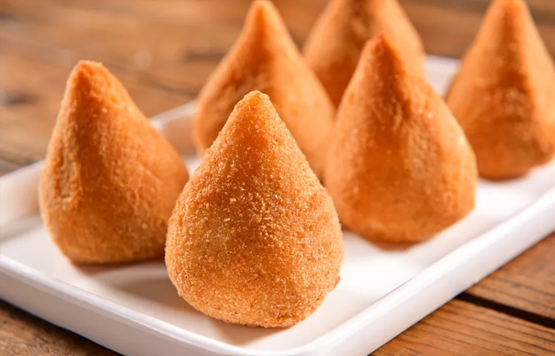
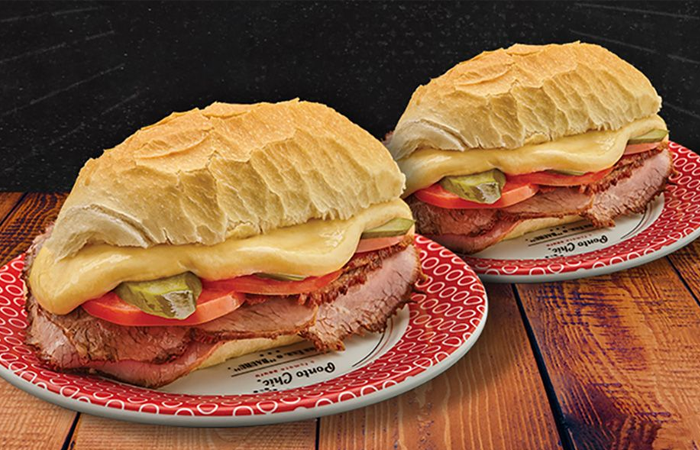
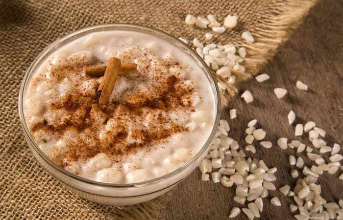

Feijoada

Feijoada é uma designação comum dada a pratos da culinária de regiões e países lusófonos como Portugal, Brasil, Angola, Moçambique, Timor-Leste e Macau. Consiste num guisado de feijão, normalmente com carne, e quase sempre acompanhado com arroz.
Acarajé

O acarajé é uma especialidade gastronômica das culinárias africana e afro-brasileira. Trata-se de um bolinho feito de massa de feijão-fradinho, cebola e sal, e frito em azeite de dendê. No continente africano é conhecido como akara, e especificamente no norte da Nigéria é também chamado de kosai.
Cuscuz

Cuscuz é um prato berbere originário do Magrebe (região do noroeste do continente africano). Consiste num preparado de sêmola de cereais, principalmente o trigo, quando a sêmola é amassada à mão com um pouco de água até se transformar em pequenos grãos que devem ser cozidos no vapor numa cuscuzeira e servidos com um molho que pode ter sido feito na parte inferior da cuscuzeira.
Coxinha
A coxinha é um salgadinho brasileiro, de origem paulista, também comum em Portugal, feito com massa de farinha de trigo e caldo de galinha, que envolve um recheio elaborado com carne temperada de frango, queijo, calabresa ou vários outros tipos de sabores.
Sanduiche Bauru
O bauru é um sanduíche de origem paulista, inventado por Casimiro Pinto Neto. O sanduíche, criado em 1937 no restaurante Ponto Chic, logo se tornou popular e foi batizado com a alcunha de seu criador, que recebeu este apelido em referência à cidade em que nasceu.
Virado a Paulista

Sua origem data do século XVII, na época do Brasil Colônia, como forma de alimentação nas monções e bandeiras. Durante as expedições, alimentos como o feijão, a farinha de milho, a carne-seca e o toucinho chacoalhavam e ficavam “revirados”, dando origem à iguaria.
Tapioca

Tapioca ou goma é a fécula extraída da mandioca, usualmente preparada em forma granulada. Trata-se do ingrediente principal de algumas iguarias típicas do Brasil, como o beiju, quitute indígena descoberto pelos portugueses em Pernambuco no século XVI. É muito comum o uso do termo tapioca para referir-se ao beiju.
Pão de Queijo

O pão de queijo é uma iguaria oriunda da América do Sul, muito apreciada no Brasil. É uma variação da chipa, receita criada pelas missões jesuíticas, com influências indígena e europeia, que é típica de países como Paraguai e Argentina. Teria entrado no Brasil por volta da década de 1860.
Pudim

Pudim é a denominação genérica de dois tipos de alimentos. Saber qual desses dois alimentos é considerado pudim varia entre diversas regiões geográficas.
Paçoca

Paçoca de amendoim, ou Capiroçava, é um doce tradicional brasileiro à base de amendoim, farinha de mandioca e açúcar. É tradicionalmente preparada no Brasil para consumo nas festividades da Semana Santa e festas juninas.
Cocada

Cocada é um doce à base de coco, tradicional em várias regiões do mundo, especialmente na América Latina e em Angola. Existem variantes quanto a receita aplicada em diferentes países, como a utilização de gemas, leite, leite condensado, rapadura, amendoim, leite de coco e coco ralado queimado.
Canjica
A canjica, ao lado da moqueca, da paçoca, do mingau, do beiju, da carne moqueada, seria uma deliciosa herança dos Tupinambá, índios brasileiros que habitavam o litoral, quando da chegada dos europeus nos começos do século 16. O estudioso recifense concebe a canjica como sendo derivada do termo tupi “acanjic”.
Brigadeiro

O brigadeiro é um doce típico da culinária brasileira, com origem no Rio de Janeiro, que rapidamente se difundiu pelo Brasil, tornando-se comum em todo o país a sua presença em festas de aniversário, junto com doces como o cajuzinho e o beijinho. É conhecido também no Rio Grande do Sul pelo nome de negrinho.
Bolo de Rolo

O bolo de rolo é um doce brasileiro, típico de Pernambuco. A massa é feita com farinha de trigo, ovos, manteiga e açúcar.